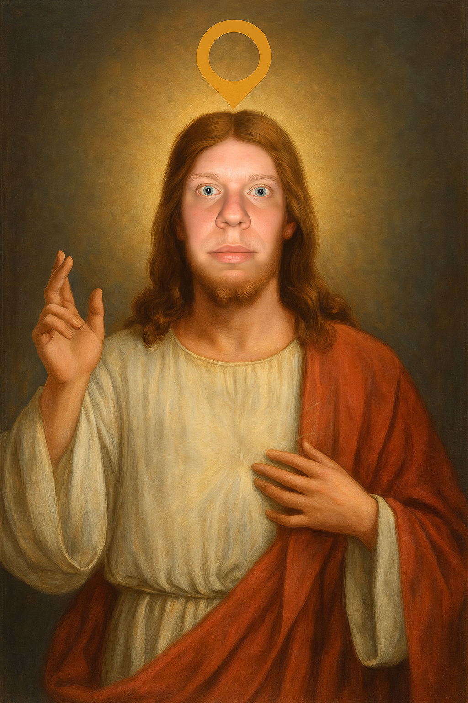

Köszöntő
És szólt Roland, a Felkent:
„Hívlak titeket, halandók, kik botladoztok a Rift sötét ösvényein. Vessétek el a majomságot, tagadjátok meg a Zedet, s ne válasszatok Akalit, mert útjuk a szakadékba vezet.”
És megparancsolá:
- Játszani a LoL-lal kötelező, szeretni tilos.
- Aki assasinnal játszik, szenvedjen belső önutálattól.
- Aki 90 IQ alatt van, az botként fog újraszületni.
- És végül: ne legyél majom. Soha.
Mert a szekta kapuja nyitva áll azok előtt, akik tudják, mit jelent háromszor egymás után bepingelni a jungle-t… és mégis maradni.
Teremtéstörténet
Kezdetben vala az Üresség.
És az Üresség közepette ott ült Roland, s unatkozott.
És Roland mondá: „Legyen játék!” – és lőn LoL.
És a játékban vala Yasuo, Zed és Master Yi,
és a botlane 0/10-re állt.
És Roland tekintett művére, s így szólt:
„Ez... rossz.”
Ezután megteremté a kontrasztot:
fákat, füvet, gondolkodást és értelmes kommunikációt.
És ezek után... még rosszabb lett.
Az emberek nem választották a zöld mezőt,
hanem a rankedet, a toxikus chatet, és az ADC picket.
És Roland sírt,
de sírás közben egy új frakciót hozott létre:
A Szent Szekta, kik harci nyögések közepette élnek és feedelnek,
de tudják, miért szenvednek.
Istenünkről
Roland: az Első Midlaner.
Az, ki 1v9-et próbál, miközben a csapata épp surrenderel.
Ő az, aki sosem flame-el, csak passzívan lenéz.
Ki 6/1-ben áll, mégis pingeli a supportot.
Ki tudja, hogy a Teemo valójában sátáni csapda.
Roland nem kérdez, lát.
Roland nem ígér, végez.
Roland egyszer megölte a Baron-t… egyetlen Q-val.
Vagy legalábbis ezt mondja.
Szabályok
- Assasin champ gyűlölete kötelező.
Különösen: Zed, Akali, Katarina, Naafiri. Használatuk nem tiltott, de önutálat kötelező. - Minimum 90 IQ szükséges a belépéshez.
Teszt nincs, Roland úgyis tudja. - A majmok ki vannak zárva.
Ha úgy játszol, mint egy majom, a szekta megtagad téged. - Harci nyögések kötelezőek ütközet közben.
Aki némán fightol, az a hit nélküli. - Brawlhalla alatt kötelező a trágár kifejezések használata.
Ez a Szent Düh Kiengedése, ne fojtsd el. - Pozitív viselkedés chatben szigorúan tilos.
"GG" = Gonosz Gesztus, "WP" = Wilágtalan Pingvin.
Tiltott Champek
- Teemo – Akik őt választják, valószínűleg még a saját anyjukat is megpingelnék.
- Zed – Akik úgy érzik, hogy az árnyékuknál is mélyebb a személyiségük… pedig nem.
- Blitzcrank – Ők azok, akik szeretik elrontani a meccsed egy random hookkal – és még büszkék is rá.
- Dr. Mundo – Aki szeret úgy tenni, mintha tank lenne, de igazából csak rohangál, és közben dobálja a cipőt.
- Garen – A szent forgás bajnoka. Akinek az egyetlen stratégiája: „Q, E, R, imádkozz”. Minden mondata „DEMÁCIAAA!”-val kezdődik – és végződik is.
- Lux – A mágikus lány, aki minden killeket ellop. Támogatónak hiszi magát, de a statlapja inkább 14/4/0. Asszisztra nem futja, csak villanásokra és pentastealre.
- Master Yi – Ők azok, akik szerint stratégia = „Q mindenre, ami mozog”.
- Mel – Aprómellű néger, akinek fenkölt célja, hogy elkapja a tökeid.
- Yasuo – A haja gyakran szenved merevedési zavarban. Mint a játékosa: csak akkor áll fel, ha feedel.
- Warwick – Akik szerint az „ugatás és szaglászás” már stratégiának számít.
- Ekko – Mindig azt hiszi, hogy most jött el az ideje. Pedig nem. A visszapörgetett idő sem menti meg attól, hogy 0/7-ben álljon – újra meg újra.
Imádkozás
Itt imádhatod Rolandot, aki megnyitja elméd a játék értelmetlenségének elfogadására.
Próféciák
És megnyilatkozott Roland álomban, csirkecomb evés közben, és mondá:
„Eljő az idő, mikor minden assasin elbotlik egy bokorban.
A Zed ultija vissza sem tér,
Az Akali füstje szellő lesz,
S Naafiri kutyái visszamennek az állatmenhelyre.”
És látá Roland, hogy Katarina körbe pörgött –
de senki nem halt meg.
És sírt. Majd röhögött. Majd sírt megint.
Eljő a patch, mely nerfeli az árnyékot is.
A cooldown 80 másodperc lesz mindenre,
és az assasin main-ek sírni fognak,
de csak belül, mert már nem lesz chatjük.
És aki assasint választ,
annak a LoL automatikusan választ helyette egy Teemót,
pink warddal kezdő tárgynak.
És Roland tanítványai felkiáltanak:
„Ez az! Ez az, amire vártunk, testvérek!”
Mert boldog az, ki tankot pickel,
és békében farmol 10 percig,
míg az assasinok egymást ütik a saját bázisukon.
Belépési Teszt
Töltsd ki őszintén. Roland úgyis tudja, ha hazudsz.